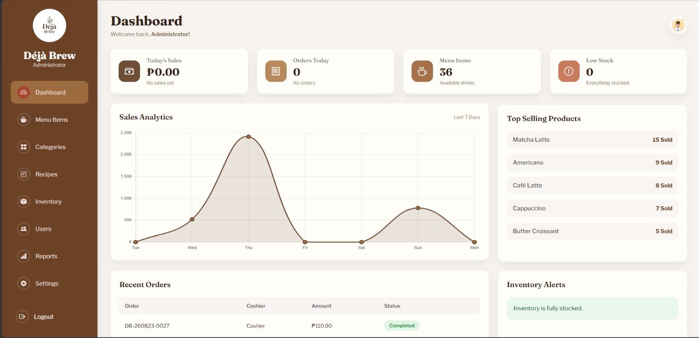
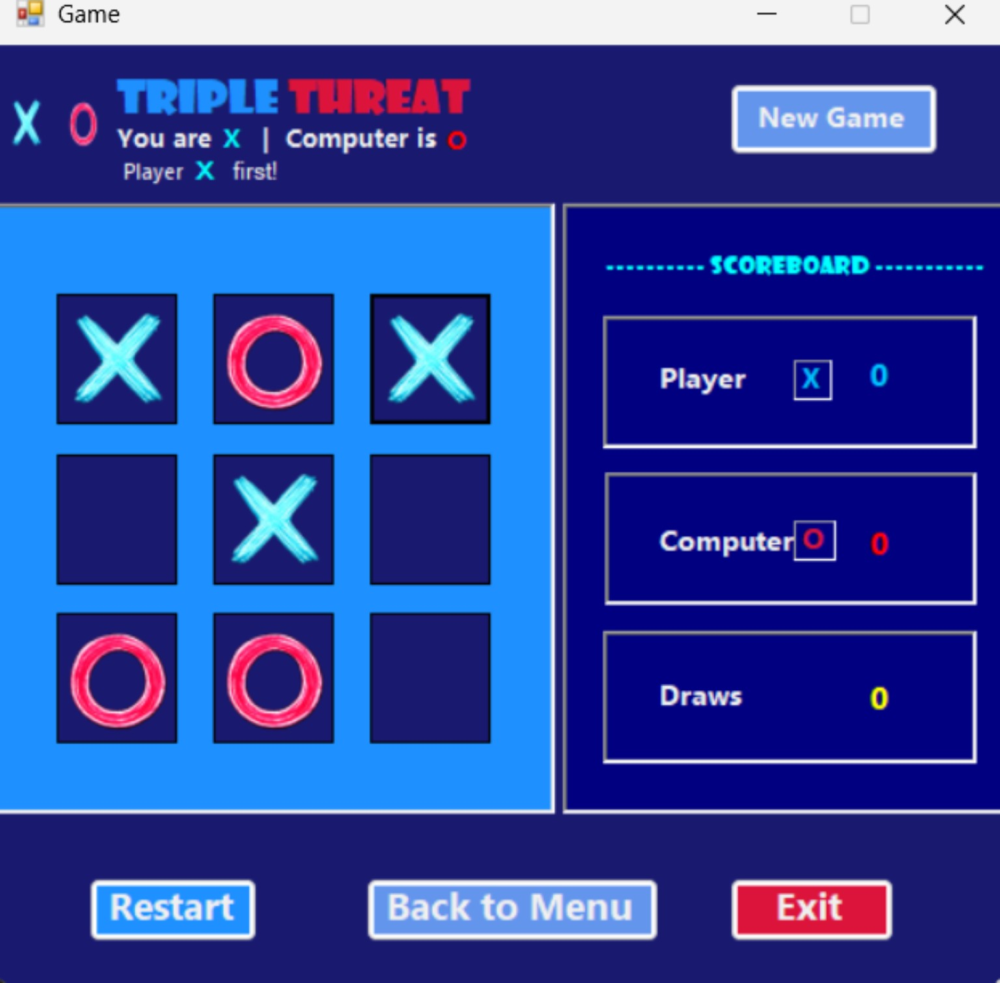

BUILD / 01 — WEB SYSTEM
Deja Brew
A café point-of-sale and management system with an administrator dashboard for sales, orders, menu items, inventory, users and reporting.
View source code ↗I'm Antonio Mangampo. I build practical web and software projects with a focus on clean interfaces, useful functionality and learning by shipping.
Two class projects that show different sides of my development work. Since these projects don't have a public live demo, the buttons below go straight to the source repositories.

A café point-of-sale and management system with an administrator dashboard for sales, orders, menu items, inventory, users and reporting.
View source code ↗
A C# Windows Forms Tic-Tac-Toe game with player-versus-computer gameplay, score tracking, restart controls and a custom visual interface.
View source code ↗A practical toolkit rather than a long list of technologies I barely touch.
HTML, CSS and JavaScript for responsive, interactive interfaces.
PHP, application logic and database-driven workflows.
C# and Windows Forms for focused desktop software projects.
Git, GitHub, debugging, iteration and practical problem solving.
Simple process. Clear priorities. Build, test, improve.
Break the requirement into features, users, screens and data.
Plan the interface and application flow before writing everything at once.
Implement the core functionality, then shape the interface around it.
Test interactions, fix rough edges and improve the experience.
Sample names and comments are used here because this portfolio is being presented for a class project. Replace them with real feedback if you later collect testimonials.
“The Deja Brew dashboard makes a lot of information feel organized. The navigation and overall layout are easy to follow.”
“I liked that the XO game wasn't just functional—the interface gives the project its own identity and makes it feel like a finished application.”
“The portfolio shows different skills instead of repeating the same type of project. It gives a clear idea of what the developer can build.”
I'm a developer who enjoys turning ideas into working digital experiences. I care about understandable code, useful features and interfaces that are straightforward to use.
My portfolio is still growing. Every project is an opportunity to learn another technique, solve a different problem and make the next build better.
Open to opportunities, collaborations and interesting projects. You can also explore the source code behind my current work on GitHub.
Start a conversation ↗